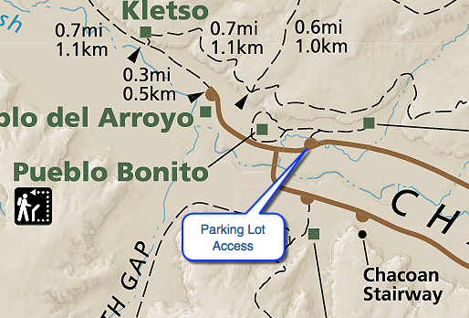

Hike New Mexico
w/ Tom & Ken
Pueblo Bonito Site Walk
| Difficulty | Round-trip | Type | Elev. Chg. | Exposure | Wow Factor | Facilities | Seasons | Flickr | By Car |
|---|---|---|---|---|---|---|---|---|---|
| Easy | 1 mile | Out-and-back | 50 ft | Full sun | Huge ruins | Visitor Center | All | Album |  |



- May 21, 2016: Bonito from the parking area
- May 21, 2016: In the interior
- May 21, 2016: Several of many kivas
- May 21, 2016: Looking from the South End
- May 21, 2016: Long view of Bonito
- https://www.flickr.com/photos/139088815@N08/26990314770/in/album-72157668825446256
- https://www.flickr.com/photos/139088815@N08/26990304130/in/album-72157668825446256
- https://www.flickr.com/photos/139088815@N08/27265895805/in/album-72157668825446256
- https://www.flickr.com/photos/139088815@N08/26990271890/in/album-72157668825446256
- https://www.flickr.com/photos/139088815@N08/26660079063/in/album-72157668825446256
Pueblo Bonito is the largest excavated site in Chaco Canyon, and is considered central to the Chaco Cultural Site. It is the largest Great House with the most kivas in the canyon area. Walking to and around the site from the parking area consumes about a mile, and provides many interior and exterior views. Pueblo Bonito is also central to the astronomical discoveries made about Chaco Canyon (check out the DVD: The Mystery of Chaco Canyon, narrated by Robert Redford). It is a fascinating place to explore.